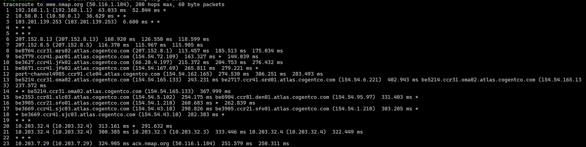
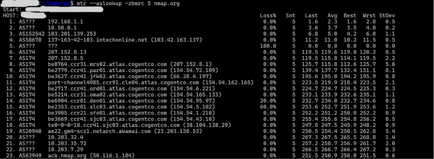

Objective: In this we are going to create a router and connect all the other machines to this router and explore related things.
Before proceeding, create another virtual machine to setup DNS and add it to our private network.
Table Of Contents
- What is Internet?
- What & Why Routers?
- Example Explained
- Setting up the router
- Connecting others to router
- Conclusion
What is Internet?
Internet can be thought of as a network of networks. Contrary to the popular belif, the entirity of the internet is wired not wireless. Let us first understand how the whole infrastructure work and how someone sitting in Asia can talk to someone sitting in Australia via internet.
At your home, you may have a router to provide you with internet access. You would observe that a wire comes out of the router which connects to a light pole or connects with other wires.
Your Router, it connects to the local Central Office of your local Service Provider. Your local service provider has purchased a connection to a national service provider. Your Local ISP forwards your packets to the national service provider which forwards your requests to the destination it is supposed to go to.
Now all this forwarding your packets, it is accomplished via routers. There are networks of networks of routers. All the transfer takes via physical cables whether it be figber optic or copper cables or transoceanic cables.
Thus, routers play a critical role in the modern infrastructure.
What & Why Routers?
Routers are a Layer 3 device which means they deal with IP addresses unlike a switch which is a Layer 2 device which deals only with MAC addresses. A Routers job is to accept incoming packets and transmit it to the suitable destination, determined by its internal routing table.
The Router we see in our homes is a gateway router which is an all in one device that performs the job of multiple other devices. Whereas the actual, standalone routers is a single device whose sole job is to route a packet from one port to another according to its routing table. Let us talk in a bit depth about our home routers.
Our home router or gateway routers contains wirelass access points, switch, router and modem. The Wireless Access Points is the one to which we connect to, we can recognise the WAP by the ssid or the name which appears when we try to connect to wifi.
The WAP or WAPs connects to the switch which allows for communication between the devices connected to the WAPs. The switch then connects to router which decides where to send the packet to. Then router is connected to modem which converts the digital signal to electrical signals for the wires to carry it out.
Example Explained
To understand this better we will use a tool called traceroute.
- Traceroute is a network diagnostic tool that discovers the path packets take from a source device to a destination. It works by sending packets with progressively increasing Time To Live (TTL) values
- TTL is an 8-bit field in the IP header that specifies the maximum number of routers (hops) a packet can traverse before being discarded.
- Each router decrements the TTL by one, and when it reaches zero, the router drops the packet and returns an ICMP Time Exceeded message.
- By starting with a TTL of 1 and increasing it one hop at a time, traceroute identifies every router along the path and measures the round-trip time (RTT) to each hop, helping diagnose routing paths, latency, and network connectivity issues.

Let us explore this output hop by hop.
- Hop 1: This is the default gateway of my router. Every device send their request here at 192.168.1.1 ( in maharashtra ).
- Hop 2: This is the default gateway 10.50.0.1 (in maharashtra) of the network of routers, of which my router is also a part of. This is a carrier grade network setup by local ISP.
- Hop 3: This is the first publically routable router 103.201.139.253 (in maharashtra ). It maybe a part of my local ISP or the national ISP i pay to. But after looking at a site like ipinfo.io we figure it is a part of my local ISP.
- Hop 4-5: These routers do not respond to traceroute. Hence traceroute cannot determine their address.
- Hop 6-7: These ip 207.152.8.13 and 207.152.8.5 belong to Cogent Communications router in Raichur, Karnatak ( from ipinfo.io ). Cogent is one of the largest ISP in the world.
-
Hop 8-18: These ip are part of Cogent's international network. We see these addresses as
reverse-dns is enabled on these routers. From the name we can understand the approximate path.
Marseille → Paris → New York (JFK) → Cleveland → Omaha → Salt Lake City → San Francisco → San Jose
This is a typical transatlantic Cogent backbone path heading from Europe to the U.S. West Coast. - Hop 19 & 22: This router did not respond to the traceroute probe.
- Hop 20-21: These are private ip addr. We have no idea who owns this.
- Hop 23: This is the nmap website. We reached our destination.
We could use another tool called mtr. Perhaps you should try to decode the output by your own.

Setting up the router
Before we setup the router, it is imperative that you understand how iptables work. click here to read about it.
The first step is to enable packet forwarding so that packets recived on the enp0s8 interface which is a part of internal network is forwaded to enp0s3 which provides us access to internet.
$ sysctl -w net.ipv4.ip_forward=1
$ cat /proc/sys/net/ipv4/ip_forward
Then using iptables we can set it up to act as a router ( NAT )
$ iptables -t NAT -A POSTROUTING -o enp0s3 -j MASQUERADE
And here we have our router.
Connecting others to router
To connect other machines to our router, we simply configure the netplan config.
Note: Default gateway refers to our router. For eg 192.168.1.1 is the default gateway, an internal interface for other devices to send packets to.
network:
ethernet:
enp0s8:
addresses:
- 10.2.0.20/24
nameservers:
addresses:
- 10.2.0.20
search:
- lab.local
routes:
- to: default
via: 10.2.0.1 ( the ip of the vm acting as router )
dhcp4: false
dhcp6: false
version: 2
Conclusion
In this article we set up a router and connected other machines to this router. Also we explored some other tools and understood how routers and internet works.
Note: In this writeup we didn't explore things like NAT, private IP addresses and classless subnetting. You can explore this on your own or read here.